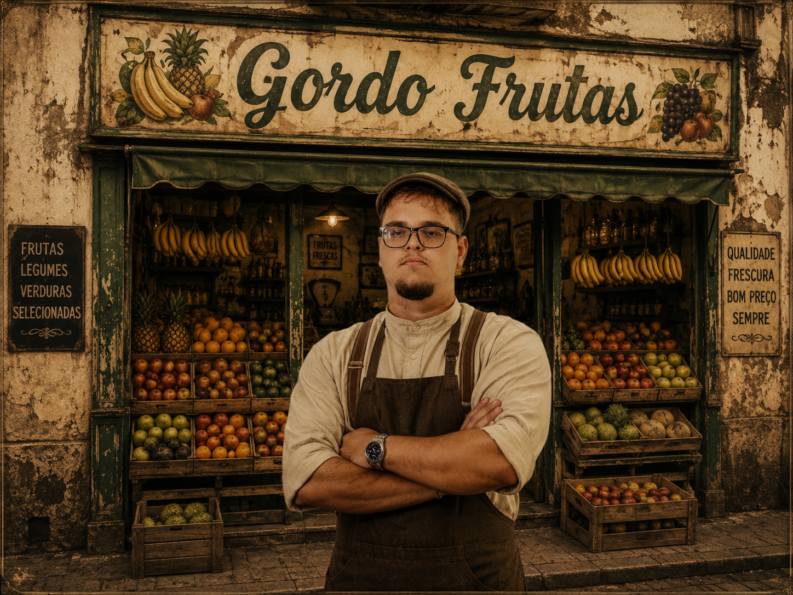

FUNDADOR
Luiz Fernando Blume Jacinto
Nascido em Santa Catarina, Luiz aprendeu desde cedo com o pai o valor de um produto bem cuidado. Aos 28 anos, com uma carroça e muita determinação, abriu sua primeira banca e conquistou os clientes pelo sorriso largo e pela honestidade na balança — daí o apelido carinhoso que virou nome de marca.
Hoje Luiz acompanha pessoalmente a seleção dos produtos, garante parcerias com mais de 30 produtores rurais e ainda passa as manhãs na loja recebendo os clientes de sempre.
